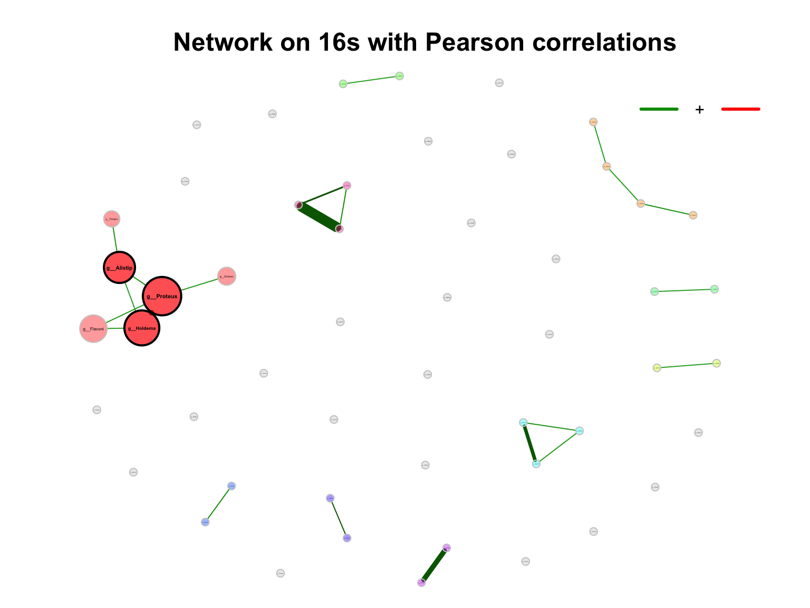

Chapter 9 Test Example
9.1 Loading packages
library(XMAS2)
library(dplyr)
library(tibble)
library(phyloseq)
library(ggplot2)
library(ggpubr)
library(readxl)9.2 Loading data
metaphlan2_res <- read.table("DataSet/RawData/merged_metaphlan2.tsv",
header = TRUE, stringsAsFactors = FALSE) %>%
tibble::rownames_to_column("ID")
metadata <- read_xlsx("DataSet/RawData/诺禾宏基因组678月-ZH.xlsx", sheet = 3)9.3 Step1: Convert inputs into phyloseq data
metaphlan2_res_list <- import_metaphlan_taxa(metaphlan2_res, taxa_level = "Species")
tax_tab <- metaphlan2_res_list$tax_tab
otu_tab <- metaphlan2_res_list$abu_tab
colnames(otu_tab) <- gsub("X", "S_", colnames(otu_tab))
sam_tab <- metadata %>% data.frame() %>%
dplyr::mutate(Group=ifelse(SampleType == "粪便", "Stool",
ifelse(SampleType == "QC", "QC", "Product"))) %>%
dplyr::select(SampleTubeID, Group, everything())
rownames(sam_tab) <- paste0("S_", sam_tab$SeqID_MGS)
overlap_samples <- intersect(rownames(sam_tab), colnames(otu_tab))
otu_tab_cln <- otu_tab[, match(overlap_samples, colnames(otu_tab))]
sam_tab_cln <- sam_tab[match(overlap_samples, rownames(sam_tab)), ]
rownames(sam_tab_cln) <- overlap_samples
metaphlan2_ps <- get_metaphlan_phyloseq(otu_tab = otu_tab_cln,
sam_tab = sam_tab_cln,
tax_tab = tax_tab)
metaphlan2_ps## phyloseq-class experiment-level object
## otu_table() OTU Table: [ 328 taxa and 145 samples ]
## sample_data() Sample Data: [ 145 samples by 12 sample variables ]
## tax_table() Taxonomy Table: [ 328 taxa by 7 taxonomic ranks ]if (!dir.exists("DataSet/Step1/")) {
dir.create("DataSet/Step1/")
}
saveRDS(metaphlan2_ps, "DataSet/Step1/Donor_MGS_phyloseq.RDS", compress = TRUE)Transform limit of detection (LOD) into Zeros
if (0) {
# species
metaphlan2_ps_species_LOD <- aggregate_LOD_taxa(metaphlan2_ps,
taxa_level = "Species",
cutoff = 1e-04)
# genus
metaphlan2_ps_genus_LOD <- aggregate_LOD_taxa(metaphlan2_ps,
taxa_level = "Genus",
cutoff = 1e-04)
# order
metaphlan2_ps_order_LOD <- aggregate_LOD_taxa(metaphlan2_ps,
taxa_level = "Order",
cutoff = 1e-04)
if (!dir.exists("DataSet/Step2/")) {
dir.create("DataSet/Step2/")
}
saveRDS(metaphlan2_ps_species_LOD, "DataSet/Step2/Donor_MGS_phyloseq_species_LOD.RDS", compress = TRUE)
saveRDS(metaphlan2_ps_genus_LOD, "DataSet/Step2/Donor_MGS_phyloseq_genus_LOD.RDS", compress = TRUE)
saveRDS(metaphlan2_ps_order_LOD, "DataSet/Step2/Donor_MGS_phyloseq_order_LOD.RDS", compress = TRUE)
}9.4 Step2: BRS checking
metaphlan2_ps <- readRDS("DataSet/Step1/Donor_MGS_phyloseq.RDS")
metaphlan2_ps_species <- summarize_taxa(metaphlan2_ps, taxa_level = "Species")
tail(metaphlan2_ps_species@sam_data %>% data.frame())## SampleTubeID Group Date_Sequencing ProductID SampleType ProductBatch Date_Sampling Date_Receiving SeqID_MGS
## S_7769 GGM50-210730 Stool 2021-08-03 M50 粪便 CYM50-210735 2021.07.30 2021-08-06 7769
## S_7770 CYM50-210735-0727 Product 2021-08-03 M50 肠菌胶囊 CYM50-210735 2021.07.27 2021-08-06 7770
## S_7771 CYM50-210735-0728 Product 2021-08-03 M50 肠菌胶囊 CYM50-210735 2021.07.28 2021-08-06 7771
## S_7772 CYM50-210735-0729 Product 2021-08-03 M50 肠菌胶囊 CYM50-210735 2021.07.29 2021-08-06 7772
## S_7773 CYM50-210735-0730 Product 2021-08-03 M50 肠菌胶囊 CYM50-210735 2021.07.30 2021-08-06 7773
## S_7222 Community QC <NA> Ref QC <NA> <NA> <NA> 7222
## SeqID_16s Pipeline_MGS
## S_7769 7929 /share/work/HPC/work_tmp/PipelineJob_180_20210923/output
## S_7770 7930 /share/work/HPC/work_tmp/PipelineJob_180_20210923/output
## S_7771 7931 /share/work/HPC/work_tmp/PipelineJob_180_20210923/output
## S_7772 7932 /share/work/HPC/work_tmp/PipelineJob_180_20210923/output
## S_7773 7933 /share/work/HPC/work_tmp/PipelineJob_180_20210923/output
## S_7222 7327 /share/work/HPC/work_tmp/PipelineJob_180_20210923/output
## Pipeline_16s
## S_7769 /share/projects/Engineering/pipeline_output/PipelineJob_304_20211203
## S_7770 /share/projects/Engineering/pipeline_output/PipelineJob_304_20211203
## S_7771 /share/projects/Engineering/pipeline_output/PipelineJob_304_20211203
## S_7772 /share/projects/Engineering/pipeline_output/PipelineJob_304_20211203
## S_7773 /share/projects/Engineering/pipeline_output/PipelineJob_304_20211203
## S_7222 /share/projects/Engineering/pipeline_output/PipelineJob_304_20211203run_RefCheck(
ps=metaphlan2_ps_species,
BRS_ID="S_7222",
Reference=NULL,
Ref_type="MGS",
Save=NULL)## 7682 7683 7684 7685 7842 7843 7844 7845 S_7222 mean
## Escherichia_coli 8.77158 8.33337 7.70416 8.11247 10.44118 10.33823 9.96261 11.06988 9.85431 9.398643
## Enterococcus_faecalis 11.46778 12.46200 11.92117 11.95884 13.71474 13.67805 13.21782 13.27297 17.19286 13.209581
## Impurity_level 7.33876 7.34799 7.14891 6.47250 8.88190 9.72198 9.72162 10.57600 72.95000 15.573296
## Evaluation
## Escherichia_coli S_7222 didn't pass the threshold (2022-06-22 18:21:42).
## Enterococcus_faecalis S_7222 didn't pass the threshold (2022-06-22 18:21:42).
## Impurity_level S_7222 didn't pass the threshold (2022-06-22 18:21:42).metaphlan2_ps_remove_BRS <- get_GroupPhyloseq(
ps = metaphlan2_ps,
group = "Group",
group_names = "QC",
discard = TRUE)
metaphlan2_ps_remove_BRS## phyloseq-class experiment-level object
## otu_table() OTU Table: [ 328 taxa and 144 samples ]
## sample_data() Sample Data: [ 144 samples by 12 sample variables ]
## tax_table() Taxonomy Table: [ 328 taxa by 7 taxonomic ranks ]if (!dir.exists("DataSet/Step3/")) {
dir.create("DataSet/Step3/")
}
saveRDS(metaphlan2_ps_remove_BRS, "DataSet/Step3/Donor_MGS_phyloseq_remove_BRS.RDS", compress = TRUE)9.5 Step3: Extracting specific taxonomic level
metaphlan2_ps_remove_BRS <- readRDS("DataSet/Step3/Donor_MGS_phyloseq_remove_BRS.RDS")
metaphlan2_ps_remove_BRS_species <- summarize_taxa(metaphlan2_ps_remove_BRS,
taxa_level = "Species")
metaphlan2_ps_remove_BRS_species## phyloseq-class experiment-level object
## otu_table() OTU Table: [ 320 taxa and 144 samples ]
## sample_data() Sample Data: [ 144 samples by 12 sample variables ]
## tax_table() Taxonomy Table: [ 320 taxa by 7 taxonomic ranks ]metaphlan2_ps_remove_BRS_genus <- summarize_taxa(metaphlan2_ps_remove_BRS,
taxa_level = "Genus")
metaphlan2_ps_remove_BRS_genus## phyloseq-class experiment-level object
## otu_table() OTU Table: [ 108 taxa and 144 samples ]
## sample_data() Sample Data: [ 144 samples by 12 sample variables ]
## tax_table() Taxonomy Table: [ 108 taxa by 6 taxonomic ranks ]if (!dir.exists("DataSet/Step4/")) {
dir.create("DataSet/Step4/")
}
saveRDS(metaphlan2_ps_remove_BRS_species, "DataSet/Step4/Donor_MGS_phyloseq_remove_BRS_species.RDS", compress = TRUE)
saveRDS(metaphlan2_ps_remove_BRS_genus, "DataSet/Step4/Donor_MGS_phyloseq_remove_BRS_genus.RDS", compress = TRUE)9.6 Step4: GlobalView
metaphlan2_ps_remove_BRS_species <- readRDS("DataSet/Step4/Donor_MGS_phyloseq_remove_BRS_species.RDS")
# alpha
metaphlan2_ps_remove_BRS_species_alpha <- run_alpha_diversity(ps=metaphlan2_ps_remove_BRS_species,
measures = c("Shannon", "Simpson", "InvSimpson"))
plot_boxplot(data=metaphlan2_ps_remove_BRS_species_alpha,
y_index = c("Shannon", "Simpson", "InvSimpson"),
group = "Group",
group_names = c("Stool", "Product"),
group_color = c("red", "blue"))
Figure 9.1: diversity and ordination and composition(Example)
# beta
metaphlan2_ps_remove_BRS_species_beta <- run_beta_diversity(ps=metaphlan2_ps_remove_BRS_species, method = "bray")
plot_distance_corrplot(metaphlan2_ps_remove_BRS_species_beta$BetaDistance)
Figure 9.2: diversity and ordination and composition(Example)
# permanova
run_permanova(ps=metaphlan2_ps_remove_BRS_species, method = "bray", columns = "Group")## SumsOfSample Df SumsOfSqs MeanSqs F.Model R2 Pr(>F) AdjustedPvalue
## Group 144 1 1.328449 1.328449 6.291579 0.04242708 0.001 0.001# beta dispersion
beta_df <- run_beta_diversity(ps=metaphlan2_ps_remove_BRS_species, method = "bray", group = "Group")##
## Permutation test for homogeneity of multivariate dispersions
## Permutation: free
## Number of permutations: 999
##
## Response: Distances
## Df Sum Sq Mean Sq F N.Perm Pr(>F)
## Groups 1 0.01672 0.016715 1.1783 999 0.285
## Residuals 142 2.01430 0.014185
##
## Pairwise comparisons:
## (Observed p-value below diagonal, permuted p-value above diagonal)
## Product Stool
## Product 0.277
## Stool 0.27953# ordination
metaphlan2_ps_ordination <- run_ordination(
ps = metaphlan2_ps_remove_BRS_species,
group = "Group",
method = "PCoA")
plot_Ordination(ResultList = metaphlan2_ps_ordination,
group = "Group",
group_names = c("Stool", "Product"),
group_color = c("blue", "red"))
Figure 9.3: diversity and ordination and composition(Example)
# Microbial composition
plot_stacked_bar_XIVZ(
phyloseq = metaphlan2_ps_remove_BRS_species,
level = "Phylum",
feature = "Group")
Figure 9.4: diversity and ordination and composition(Example)
9.7 Step6: Differential Analysis
metaphlan2_ps_remove_BRS_species <- readRDS("DataSet/Step4/Donor_MGS_phyloseq_remove_BRS_species.RDS")
# filter & trim
metaphlan2_ps_remove_BRS_species_filter <- run_filter(metaphlan2_ps_remove_BRS_species, cutoff = 1e-4, unclass = TRUE)
metaphlan2_ps_remove_BRS_species_filter_trim <- run_trim(metaphlan2_ps_remove_BRS_species_filter, cutoff = 0.1, trim = "feature")
metaphlan2_ps_remove_BRS_species_filter_trim## phyloseq-class experiment-level object
## otu_table() OTU Table: [ 181 taxa and 144 samples ]
## sample_data() Sample Data: [ 144 samples by 12 sample variables ]
## tax_table() Taxonomy Table: [ 181 taxa by 7 taxonomic ranks ]# lefse
metaphlan2_ps_lefse <- run_lefse(
metaphlan2_ps_remove_BRS_species_filter_trim,
group = "Group",
group_names = c("Stool", "Product"),
Lda = 2)
# # don't run this code when you do lefse in reality
# metaphlan2_ps_lefse$LDA_Score <- metaphlan2_ps_lefse$LDA_Score * 1000
plot_lefse(
da_res = metaphlan2_ps_lefse,
x_index = "LDA_Score",
x_index_cutoff = 2,
group_color = c("green", "red"))

Figure 9.5: Differential Analysis (Example)
metaphlan2_ps_wilcox <- run_wilcox(
metaphlan2_ps_remove_BRS_species_filter_trim,
group = "Group",
group_names = c("Stool", "Product"))
plot_volcano(
metaphlan2_ps_wilcox,
group_names = c("Stool", "Product"),
x_index = "Log2FoldChange (Rank)\nStool_vs_Product",
x_index_cutoff = 0.5,
y_index = "Pvalue",
y_index_cutoff = 0.05,
group_color = c("red", "grey", "blue"),
topN = 5)
Figure 9.6: Differential Analysis (Example)
if (!dir.exists("DataSet/Step8/")) {
dir.create("DataSet/Step8/")
}
saveRDS(metaphlan2_ps_remove_BRS_species_filter_trim, "DataSet/Step6/Donor_MGS_phyloseq_remove_BRS_species_filter_trim.RDS", compress = TRUE)9.8 Systematic Information
sessionInfo()## R version 4.1.2 (2021-11-01)
## Platform: x86_64-apple-darwin17.0 (64-bit)
## Running under: macOS Monterey 12.2.1
##
## Matrix products: default
## LAPACK: /Library/Frameworks/R.framework/Versions/4.1/Resources/lib/libRlapack.dylib
##
## locale:
## [1] en_US.UTF-8/en_US.UTF-8/en_US.UTF-8/C/en_US.UTF-8/en_US.UTF-8
##
## attached base packages:
## [1] grid stats graphics grDevices utils datasets methods base
##
## other attached packages:
## [1] readxl_1.4.0 ggpubr_0.4.0 ggplot2_3.3.5 phyloseq_1.38.0 tibble_3.1.6 dplyr_1.0.8 XMAS2_2.1.4
## [8] magrittr_2.0.2 glue_1.6.2 Gmisc_3.0.0 htmlTable_2.4.0 Rcpp_1.0.8.2
##
## loaded via a namespace (and not attached):
## [1] utf8_1.2.2 tidyselect_1.1.2 RSQLite_2.2.10 AnnotationDbi_1.56.2
## [5] htmlwidgets_1.5.4 BiocParallel_1.28.3 devtools_2.4.3 munsell_0.5.0
## [9] codetools_0.2-18 DT_0.21 withr_2.5.0 colorspace_2.0-3
## [13] Biobase_2.54.0 highr_0.9 knitr_1.37 rstudioapi_0.13
## [17] stats4_4.1.2 robustbase_0.93-9 bayesm_3.1-4 ggsignif_0.6.3
## [21] MatrixGenerics_1.6.0 labeling_0.4.2 GenomeInfoDbData_1.2.7 pheatmap_1.0.12
## [25] farver_2.1.0 bit64_4.0.5 rhdf5_2.38.1 rprojroot_2.0.2
## [29] vctrs_0.3.8 generics_0.1.2 TH.data_1.1-0 xfun_0.30
## [33] R6_2.5.1 GenomeInfoDb_1.30.1 locfit_1.5-9.5 bitops_1.0-7
## [37] rhdf5filters_1.6.0 cachem_1.0.6 DelayedArray_0.20.0 assertthat_0.2.1
## [41] scales_1.1.1 multcomp_1.4-18 nnet_7.3-17 gtable_0.3.0
## [45] processx_3.5.2 sandwich_3.0-1 rlang_1.0.2 genefilter_1.76.0
## [49] splines_4.1.2 rstatix_0.7.0 broom_0.7.12 checkmate_2.0.0
## [53] yaml_2.3.5 reshape2_1.4.4 abind_1.4-5 crosstalk_1.2.0
## [57] backports_1.4.1 Hmisc_4.6-0 tensorA_0.36.2 tools_4.1.2
## [61] usethis_2.1.5 bookdown_0.24 ellipsis_0.3.2 gplots_3.1.1
## [65] jquerylib_0.1.4 biomformat_1.22.0 RColorBrewer_1.1-2 BiocGenerics_0.40.0
## [69] sessioninfo_1.2.2 plyr_1.8.6 base64enc_0.1-3 zlibbioc_1.40.0
## [73] purrr_0.3.4 RCurl_1.98-1.6 ps_1.6.0 prettyunits_1.1.1
## [77] rpart_4.1.16 Wrench_1.12.0 cowplot_1.1.1 S4Vectors_0.32.3
## [81] zoo_1.8-9 ggrepel_0.9.1 SummarizedExperiment_1.24.0 cluster_2.1.2
## [85] fs_1.5.2 data.table_1.14.2 forestplot_2.0.1 mvtnorm_1.1-3
## [89] matrixStats_0.61.0 pkgload_1.2.4 evaluate_0.15 xtable_1.8-4
## [93] XML_3.99-0.9 jpeg_0.1-9 IRanges_2.28.0 gridExtra_2.3
## [97] shape_1.4.6 testthat_3.1.2 compiler_4.1.2 KernSmooth_2.23-20
## [101] crayon_1.5.0 htmltools_0.5.2 mgcv_1.8-39 Formula_1.2-4
## [105] tidyr_1.2.0 geneplotter_1.72.0 libcoin_1.0-9 lubridate_1.8.0
## [109] DBI_1.1.2 corrplot_0.92 MASS_7.3-55 compositions_2.0-4
## [113] Matrix_1.4-0 ade4_1.7-18 car_3.0-12 permute_0.9-7
## [117] brio_1.1.3 cli_3.2.0 parallel_4.1.2 igraph_1.2.11
## [121] GenomicRanges_1.46.1 pkgconfig_2.0.3 coin_1.4-2 foreign_0.8-82
## [125] foreach_1.5.2 annotate_1.72.0 bslib_0.3.1 multtest_2.50.0
## [129] XVector_0.34.0 stringr_1.4.0 callr_3.7.0 digest_0.6.29
## [133] vegan_2.5-7 Biostrings_2.62.0 cellranger_1.1.0 rmarkdown_2.13
## [137] edgeR_3.36.0 gtools_3.9.2 modeltools_0.2-23 lifecycle_1.0.1
## [141] nlme_3.1-155 jsonlite_1.8.0 Rhdf5lib_1.16.0 carData_3.0-5
## [145] desc_1.4.1 limma_3.50.1 fansi_1.0.2 pillar_1.7.0
## [149] lattice_0.20-45 DEoptimR_1.0-10 KEGGREST_1.34.0 fastmap_1.1.0
## [153] httr_1.4.2 pkgbuild_1.3.1 survival_3.3-1 remotes_2.4.2
## [157] png_0.1-7 iterators_1.0.14 glmnet_4.1-3 bit_4.0.4
## [161] stringi_1.7.6 sass_0.4.0 metagenomeSeq_1.36.0 blob_1.2.2
## [165] DESeq2_1.34.0 latticeExtra_0.6-29 caTools_1.18.2 memoise_2.0.1
## [169] ape_5.6-2